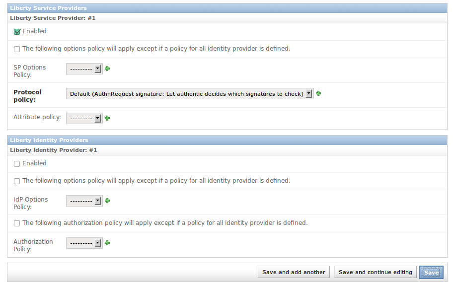
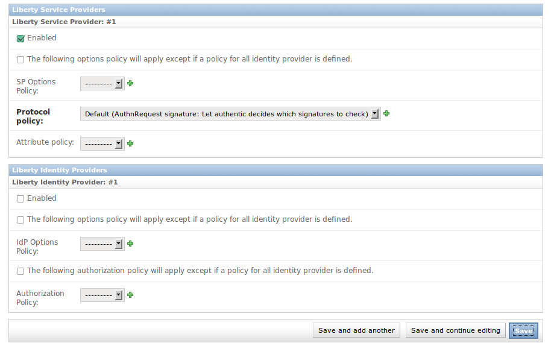
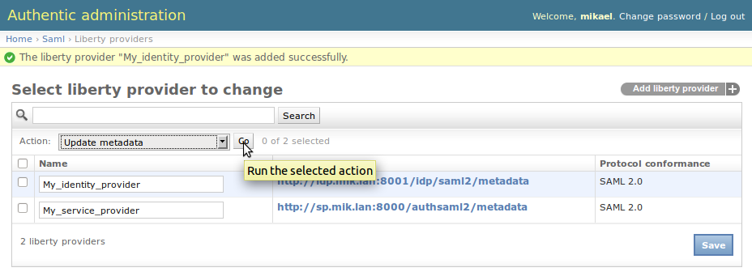

Configure SAML 2.0 service providers¶
How do I authenticate against Authentic2 with a SAML2 service provider?¶
- Declare Authentic2 as a SAML2 identity provider on your SAML2 service provider using the SAML2 identity provider metadata of Authentic2.
Go to http[s]://your.domain.com/idp/saml2/metadata
- Add and configure a SAML2 service provider in Authentic2 using the metadata of the service provider.
How do I add and configure a SAML2 service provider in Authentic2?¶
You first need to create a new SAML2 service provider entry. This requires the SAML2 metadata of the service provider.
If your service provider is Authentic2, the metadata are available at:
http[s]://your.domain.com/authsaml2/metadata
See Where do I find the Authentic2 SAML2 metadata? for more information.
Create a SAML2 service provider entry¶
Go to
http[s]://your.domain.com/admin/saml/libertyprovider/add/
Fill the form fields
 

The service provider must be enabled.
See below about configuring the service provider with policies:
- options of the service provider
- protocol policy
- attribute policy
- Save
Configure the SAML2 service provider options¶
The SAML2 options of the service provider are configured using sp options policies.
See the administration with policy principle page How global policies are used in Authentic2 administration.
You may create a regular policy and configure your service provider to use it.
Go to:
http[s]://your.domain.com/admin/saml/spoptionsidppolicy/add/


Exemple with a policy ‘Default’:


Exemple with a policy ‘All’:

If no policy is found for the configuration of the SAML2 options of a service provider, the following error is displayed when a SSO request is received.

Configure the SAML2 service provider protocol options¶
This kind of policy does not use the policy management using global policies.
You should use the default option except if your service provider is a Shibboleth service provider.
Configure the attribute policy of the service provider¶
See the attribute management page Attribute Management in Authentic2.
How to refresh metadata of an identity provider hosted at a Well-Known Location?¶
The Well-Known Location (WKL) means that the entity Id of the provider is a URL at which the provider metadata are hosted.
To refresh them, select the provider on the list of provider, then select in the menu ‘Update metadata’, then click on ‘Go’.
How to create in bulk service providers with the sync-metadata script?¶
See the page explaining the use of the script sync-metadata sync-metadata_script.